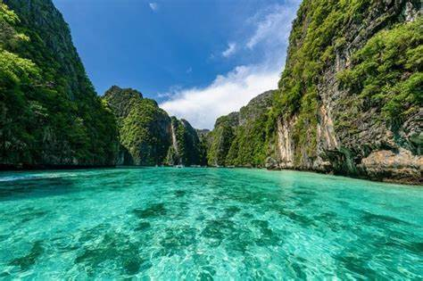
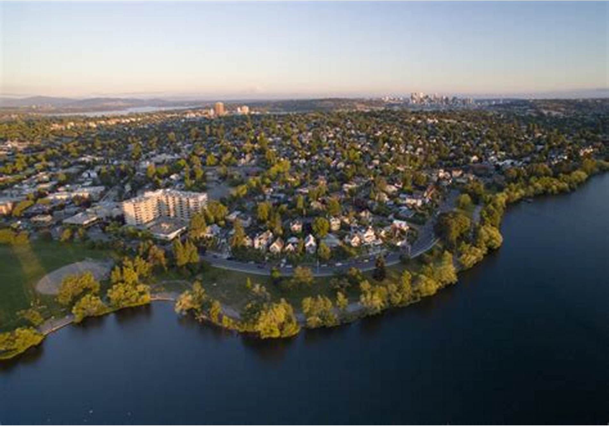
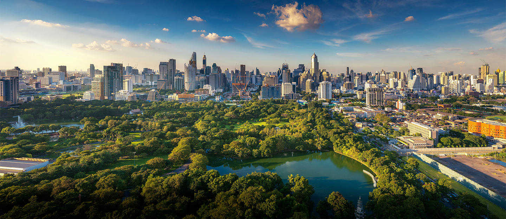
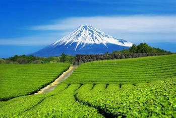

Phi phi Island
Destination 1
Phi Phi Island, part of Thailand's breathtaking archipelago in the Andaman Sea, is one of the most iconic and sought-after travel destinations in Southeast Asia. Known for its towering limestone cliffs, turquoise waters, and vibrant marine life, Phi Phi offers a perfect tropical escape for travelers looking for adventure, relaxation, and natural beauty. The archipelago consists of six islands, but the two main ones that attract the most visitors are Phi Phi Don and Phi Phi Leh. Phi Phi Don, the larger of the two, is the only inhabited island and offers a mix of lively nightlife, bustling markets, beachside resorts, and cozy restaurants serving up fresh seafood and Thai cuisine. Visitors can enjoy an array of activities, from snorkeling and diving to hiking up to the viewpoint for panoramic views of the island's stunning bays and jungle-covered hills.Phi Phi Leh, the smaller and uninhabited island, is famous for its breathtaking Maya Bay, a secluded cove framed by dramatic cliffs, pristine white sand, and crystal-clear waters.
Learn moreCaucasus Mountains

Destination 2
The Caucasus Mountains stretch across a vast and breathtaking landscape between the Black Sea and the Caspian Sea, forming a natural border between Eastern Europe and Western Asia. This majestic mountain range is renowned for its dramatic peaks, lush valleys, and diverse ecosystems, making it one of the most ecologically rich regions in the world. The Caucasus is home to Mount Elbrus, the highest peak in Europe, standing at 5,642 meters (18,510 feet), a towering, snow-capped giant that attracts mountaineers and adventure enthusiasts from around the globe. The range itself is divided into two parts: the Greater Caucasus to the north and the Lesser Caucasus to the south, each offering distinct landscapes and cultural experiences. The Greater Caucasus is characterized by rugged cliffs, deep gorges, and alpine meadows, while the Lesser Caucasus is more moderate in elevation but equally rich in biodiversity, with dense forests and rolling hills.
Learn moreGreen Lake Park
Destination 3
Green Lake Park, or Cuihu Park, is one of Kunming, China's most cherished urban green spaces. Located in the heart of the city, it is a picturesque oasis that offers a tranquil retreat from the bustling streets. The park is named after the shimmering jade waters of its lake, which are surrounded by willows, pavilions, and stone bridges that reflect traditional Chinese landscape architecture. Divided into five sections, each with its unique features, the park is renowned for its diverse beauty throughout the year. In spring and summer, the lake is surrounded by blooming lotus flowers, casting a peaceful and serene atmosphere, while autumn brings colorful leaves that reflect on the calm waters. During the winter months, the park becomes a haven for migrating black-headed gulls, which attract locals and tourists alike who come to feed and photograph the birds.Visitors to Green Lake Park can enjoy leisurely walks along the winding paths, take boat rides on the lake, or relax at one of the traditional teahouses that overlook the water
Learn moreLumphini Park
Destination 4
Lumphini Park, located in the heart of Bangkok, Thailand, is a sprawling urban green space that offers a serene escape from the city’s constant bustle. Named after the birthplace of the Buddha in Nepal, the park covers over 140 acres and serves as a tranquil retreat for both locals and tourists seeking a slice of nature amidst the urban landscape. The park is known for its expansive lawns, shady tree-lined pathways, and a large central lake where visitors can rent paddle boats to glide across the calm waters. Joggers, cyclists, and early-morning tai chi practitioners make use of the park's winding paths, creating a lively yet peaceful atmosphere, especially during the early hours of the day when the park is at its most tranquil. Throughout the park, sculptures and art installations add to its charm, while benches offer perfect spots to relax and soak in the greenery.Lumphini Park is also a hub for outdoor activities and cultural events. Every morning, it becomes a center for physical fitness, with free aerobics classes and group exercises that invite participation from people of all ages.
Learn moreShizuoka
Destination 5
Shizuoka, located along Japan’s Pacific coast, is the country's leading tea-producing region, contributing around 40% of the nation’s total tea output. Known primarily for its exceptional sencha and matcha, the region’s tea is celebrated for its vibrant green color, fresh aroma, and slightly sweet, grassy flavor. The mountainous terrain of Shizuoka, with its mild climate and misty conditions, provides the ideal environment for tea cultivation, allowing the tea plants to thrive while developing rich, complex flavors. Tea plantations here are spread across picturesque hillsides, often offering stunning views of Mt. Fuji in the distance. Beyond its natural beauty, Shizuoka is deeply rooted in Japan’s tea culture, with a history of tea cultivation that dates back centuries. The region’s tea farmers are known for their commitment to traditional methods of tea production, while also incorporating modern innovations in sustainability, such as using organic farming practices and reducing the carbon footprint of tea processing. Visitors to Shizuoka can explore various tea plantations, participate in tea-picking experiences, and enjoy fresh brews directly from the source, making it a key destination for tea lovers and a symbol of Japan’s rich tea heritage.
Learn more